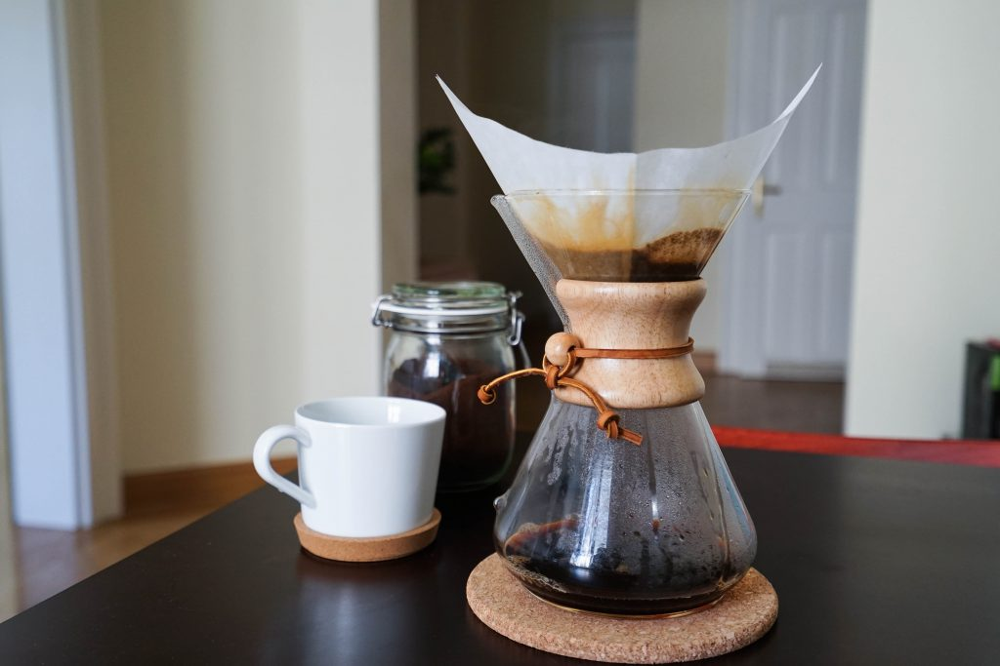
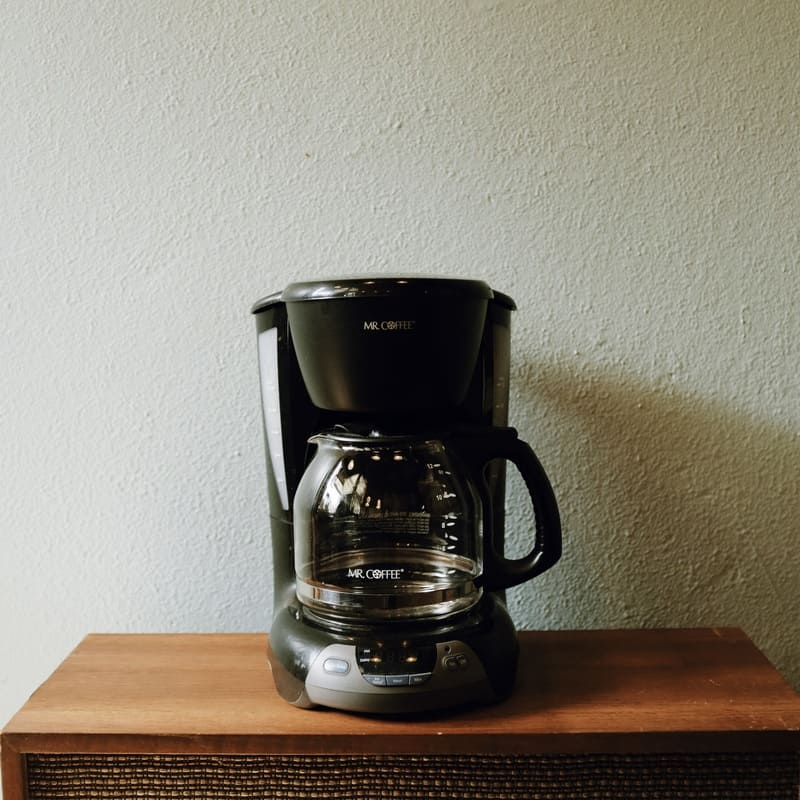

Diferentes formas en como se prepara el Cafe:
 Es sorprendente cómo los distintos métodos de elaboración pueden realzar características concretas de su café. Ayúdenos a explotar todo el potencial de su café, para que cada taza sea perfecta. Te contamos cómo preparar tu café de Starbucks® perfecto según la cafetera que utilices.
Es sorprendente cómo los distintos métodos de elaboración pueden realzar características concretas de su café. Ayúdenos a explotar todo el potencial de su café, para que cada taza sea perfecta. Te contamos cómo preparar tu café de Starbucks® perfecto según la cafetera que utilices.
Segun desde la pagina oficial de Starbucks® lo podemos realizar de las siguiente 3 formas:
- Cafetera de émbolo
- Vertido
- Cafetera
- Cafetera de émbolo

- Moler y medir
Utiliza una cafetera de émbolo con café molido grueso parecido a sal marina y añade 2 cucharadas por cada 170 ml de agua.
SUGERENCIA: Recuerda que el café es como un producto fresco. Cómpralo con frecuencia en pequeñas cantidades para disfrutar toda su frescura.
- Añade agua Caliente
Llena la cafetera de émbolo con agua caliente’ recién hervida. Asegúrate de impregnar todos los posos.
SUGERENCIA: Para que tu café tenga el mejor sabor posible, utiliza agua filtrada o embotellada
- Colocar el émbolo y elaborar
Vuelve a colocar el émbolo en la cafetera sin presionarlo y deja que el café se elabore durante 4 minutos..
- Presionar y servir
Presiona suavemente el émbolo hasta que llegue a la parte inferior de la cafetera y disfruta.
Retornar
- Vertido

- Medir y hervir
Añade la cantidad de agua que vas a utilizar para elaborar el café y un poco más para aclarar el filtro y llévala a ebullición.
- Humedece previamente el filtro
Aclara ligeramente el filtro de papel con agua caliente y desecha el agua utilizada para aclarar. Esto hará que tu café tenga el sabor más puro posible.
- Medir y moler
A continuación, añade el café. Para el vertido, utiliza café molido para conos de papel. Es una molienda relativamente fina que parece azúcar granulada. Añade 2 cucharadas de café por cada 170 ml de agua.
- Verter y hacer una pausa
Usa agua caliente recién hervida y llena el cono hasta la mitad para impregnar los posos. Haz una pausa de 10 segundos y deja que el café libere los gases. Esto permite que el café se hidrate uniformemente y empiece a desarrollar su sabor.
- Terminar de verter y disfruta
Añade lentamente el resto del agua, vertiéndola en pequeños círculos continuos para cubrir todos los posos. Disfruta inmediatamente. SUGERENCIA: Para lograr un vertido más consistente, utiliza un temporizador. Se tardan aproximadamente 3 minutos en preparar una taza.
También puedes añadir hielo fresco para enfriarlo
Retornar
- Cafetera

- Elige la molienda adecuada
En el caso de un filtro de fondo plano, utiliza una molienda media similar a la sal marina. Los filtros cónicos utilizan una molienda más fina similar al azúcar granulado.
- Medir
Usa 2 cucharadas de café recién molido por cada 170 ml de agua.
- Elaborar y disfrutar
SUGERENCIA: El café elaborado siempre sabe mejor recién hecho, por lo que se recomienda preparar la cantidad que puedas disfrutar en una sesión. El café recalentado puede perder sabor.
Retornar